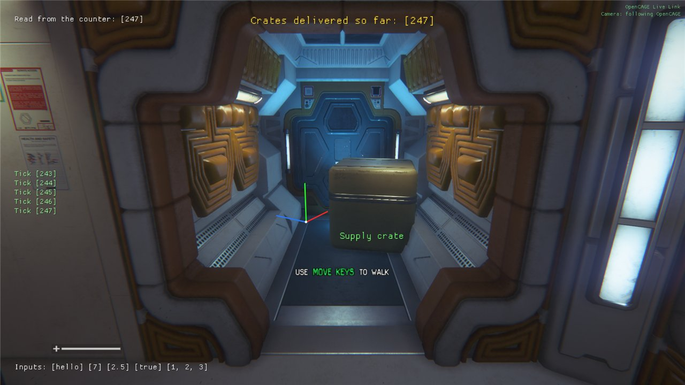
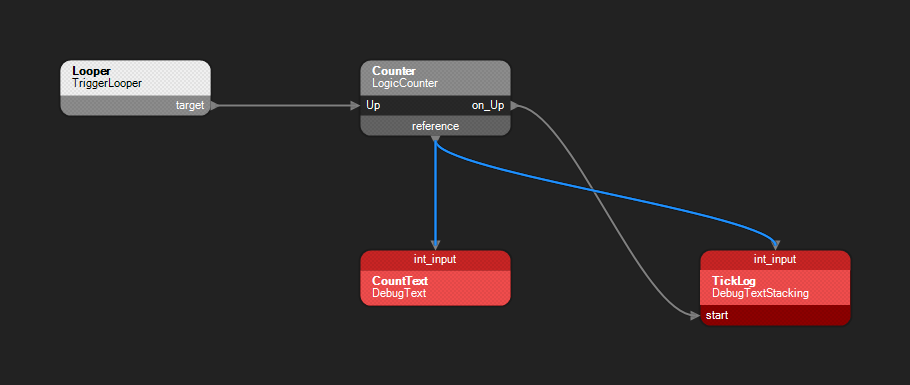
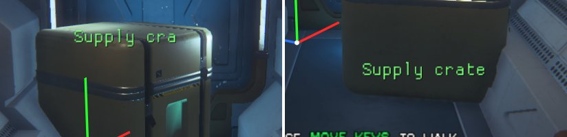

Four script entities put information on screen while the game runs, which makes them the quickest way to see what a script is doing: what fired, in what order, and with what values.
They were Creative Assembly's own debugging aids, and they're still in the scripts the game shipped with, but the retail game switches them off and draws nothing for them. OpenCAGE's runtime utils, the plugin it puts in the game folder for the Scripting Helpers, switch them back on and draw them over the game. They draw these four only: other debug entities in the entity reference, such as DebugGraph and DebugObjectMarker, aren't drawn by them. (DebugCheckpoint has a box of its own, Enable Debug Checkpoints, in Launch Game.)

All four in the game. Top left and top centre, two DebugTexts showing a counter's value, one read straight from the counter and one from a VariableInt it's written into; middle left, a DebugTextStacking logging the last five ticks; bottom left, a DebugText showing five kinds of input (all but an enum); and at the crate, a DebugPositionMarker's axes and a DebugEnvironmentMarker's label. The whole script was added while the game ran, over Live Link.
Press Launch Game on the main toolbar, and under Scripting Helpers tick a box for each one you want drawn:
Then press Start Alien: Isolation. Tick Enable Live Link in the same group too if you want to add debug entities and start them while the game runs (see Tips).
The runtime utils only support the Steam version of the game, so on other platforms the Scripting Helpers are greyed out. Starting the game from Launch Game, or by saving with Options → Misc → Open Game On Save ticked, sets them up as they're ticked in that window. They then stay in the game folder, so a game started from Steam draws whatever was ticked the last time OpenCAGE started it. See Launch Game for the rest of the group.
A DebugText shows its text on screen when it starts. After the text come its inputs, each in square brackets, always in this order:
text_inputint_inputfloat_inputbool_inputvector_inputenum_inputAn input is shown when it's linked, or when it's set to something other than its empty value: blank text, 0, false and 0, 0, 0 are left out unless they're linked. An enum is shown whenever it's set, even to its first value (0). Whole numbers show as they are, decimals to six significant figures, dropping trailing zeros (2.5; 1234.5678 shows as 1234.57), bools as true or false, vectors as x, y, z, and enums as their index number (the numbers on the Cathode Enums page). So a DebugText with the text Inputs: and the first five inputs set shows:
Inputs: [hello] [7] [2.5] [true] [1, 2, 3]The rest of its parameters decide where and how it's drawn:
alignment: where on the screen it goes, laid out as below. CENTRE is the default. Several DebugTexts at one alignment are listed one under another, in the order they started (at the bottom of the screen, that's towards the edge, so keep to one or two there).size: how big the text is. 20 by default.colour: red, green and blue, each from 0 to 255. White by default.duration: how many seconds it stays on screen, 5 by default. Set it to 0 or less (-1, say) to keep it there until it's stopped.| TOP_LEFT | TOP_CENTRE | TOP_RIGHT |
| LEFT | CENTRE | RIGHT |
| BOTTOM_LEFT | BOTTOM_CENTRE | BOTTOM_RIGHT |
While it's on screen, a DebugText reads its text and inputs again about ten times a second (and its alignment, size and colour with them), so a linked value updates as it changes. Link its int_input to a counter and you'll see the number climb: see Seeing Script Values.
Its methods:
namespace, pause_game, cancel_pause_with_button_press, priority and ci_type aren't used by the runtime utils.
A DebugText can show you any value a script is working with: a number, a piece of text, whether something is true, a vector. Its input pins (text_input, int_input and the rest) sit along the top of its node in the flowgraph. Link the one that matches the value's type to where the value lives, in one of two ways:
reference pin along the bottom of the entity's node. Link int_input to a LogicCounter's reference, and the DebugText shows the counter's count.reference. For a counter, link its Count to a VariableInt's reference, and the DebugText's int_input to that same reference. It's handy when the value is already kept in a variable, or when several things need it.The Variable entity for each input is the one of its type: a VariableString for text_input, a VariableInt for int_input, a VariableFloat for float_input, a VariableBool for bool_input, a VariableVector for vector_input and a VariableEnum for enum_input.
You can't link an output like the counter's Count straight into int_input: OpenCAGE won't make that link. Go through the entity's reference, or a variable, as above. In the flowgraph, each of these links runs between the input pin on top of the DebugText's node and the reference pin on the bottom of the other node, drawn in blue, as every link that carries data is.

A counter shown two ways. A TriggerLooper fires the counter's Up; CountText, a DebugText, shows the count all the time, and TickLog, a DebugTextStacking, adds a line each time it goes up. The blue links carry the value from the counter's reference to each int_input.
To build that yourself:
int_input pin onto the counter's node, pick reference in the Select Destination Pin window that opens, and press Connect.target to the counter's Up. Give the looper a delay (1 second, say) and a count high enough to watch, and tick the counter's is_limitless.text and a duration of -1, so it stays up, and link its int_input to the counter's reference.on_Up to its start, and its int_input to the counter's reference too.A DebugTextStacking keeps a log on screen. Each time it starts, it adds a line: its text, followed by its inputs in square brackets, shown the same way as a DebugText's (it has int_input, float_input, bool_input, vector_input and enum_input, but no text_input). The line is read once, as it starts, and doesn't change after that, so each one is a record of that moment. Start it once a second with a counter linked in, and you get a line for each tick.
size and colour work as a DebugText's do. namespace, ci_type and needs_debug_opt_to_render aren't used.Start it after the value changes. To log a value each time it changes, start the DebugTextStacking from something that fires once the change has happened, such as a LogicCounter's on_Up, which fires after Up has added one. Don't start it from the same trigger that changes the value. When one trigger is linked to two things, they don't run in any fixed order, so the stack can read the value before the change or after it, and the log repeats some numbers and skips others.
That's what happened the first time the counter above was built. The looper's target was linked to both the counter's Up and the stack's start, with the count passed through a VariableInt, and the log read 5, 5, 6, 8, 8. Rewired so the counter's on_Up starts the stack, with the stack's int_input linked to the counter's reference (as in the flowgraph above), it logged 243, 244, 245, 246, 247: one line per tick, one apart, as in the screenshot at the top.
Read the value from where it lives. Link the stack's input straight to the entity that holds the value (the counter's reference, as in that rewiring), rather than to a variable the value is copied into. It then reads the value itself at the moment it starts, so what it logs doesn't depend on the copy having been made first.
The two marker entities mark a place in the level rather than the screen. Each is drawn while it's started, so start it (with a link, or by triggering start over Live Link), and it goes a moment after it stops. They're drawn over the game's picture, so they show through walls and doors.
A DebugPositionMarker draws a set of axes at its world_pos, turned to that position's rotation: red for X, green for Y and blue for Z, each 0.6 metres long, with a white dot where they meet. It's a quick way to check where a position is and which way it faces before you use it for something else. In the screenshot at the top, it's the axes beside the crate, turned 30 degrees.
A DebugEnvironmentMarker draws its text centred on its world_pos, in its colour and at its size. Link its target to another entity's reference, and the label is drawn at that entity instead and follows it when it moves: a label on a prop stays with the prop.
The text is cut to max_string_length characters, and that's 10 by default, so raise it for anything longer: Supply crate showed as Supply cra until max_string_length was raised to 32.

Left: max_string_length at its default of 10 cuts the label short. Right: raised to 32, with target linked to the crate, the whole label shows and follows the crate to where it was moved.
Its int_input, float_input, bool_input, vector_input and enum_input, and its namespace, duration, scale_with_distance, scroll_speed and show_distance_from_target, aren't used by the runtime utils.
The runtime utils write OpenCAGE_Utils.log in the game folder, beside AI.exe. Every DebugText and DebugTextStacking that starts (with its box ticked in Launch Game) is written to it, with the time and its text as it was at that moment, inputs included:
22:03:20.362 DebugText: Inputs: [hello] [7] [2.5] [true] [1, 2, 3]
22:07:09.391 DebugTextStacking: Tick [230]
22:07:10.394 DebugTextStacking: Tick [231]So it's the place to look for a message that was gone before you could read it, or for more history than the five lines a stack keeps. A DebugText is written when it starts, not each time its value updates. The log is started afresh each time the game starts, so read it before starting the game again. It also records what Live Link did.
duration is 5 seconds by default; set it to -1 to keep it on screen until it's stopped.